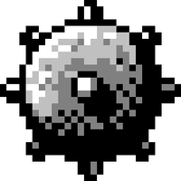
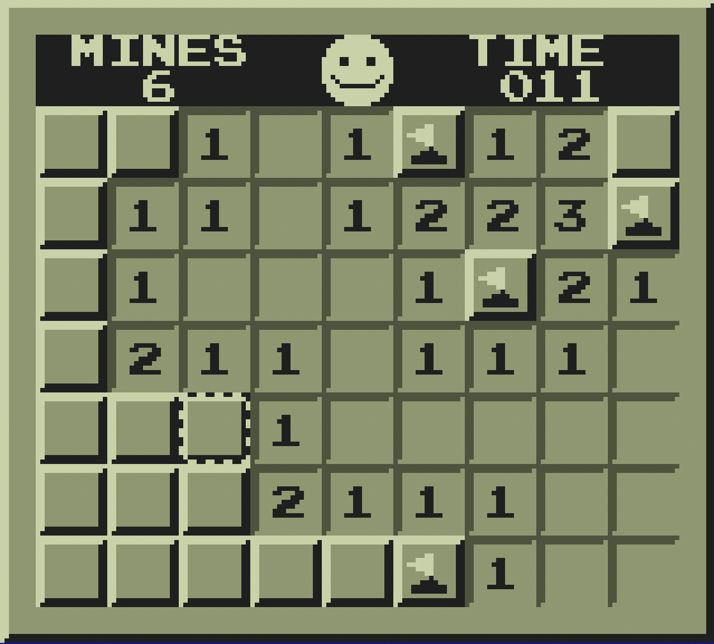

MinesweeperWelcome

Minesweeper is a logic puzzle video game genre generally played on personal computers. The game features a grid of clickable tiles, with hidden "mines" (depicted as naval mines in the original game) dispersed throughout the board. The objective is to clear the board without detonating any mines, using clues about the number of neighboring mines in each field.
Directory
Nothing here is interactive yet.